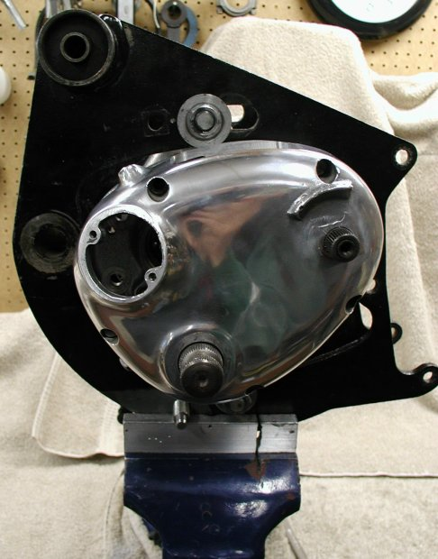
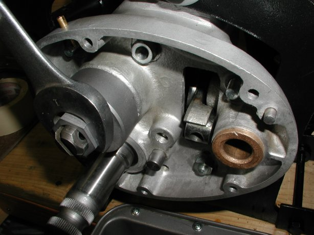
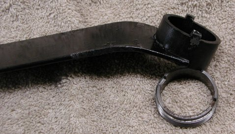
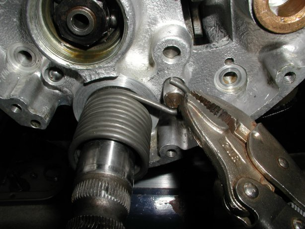
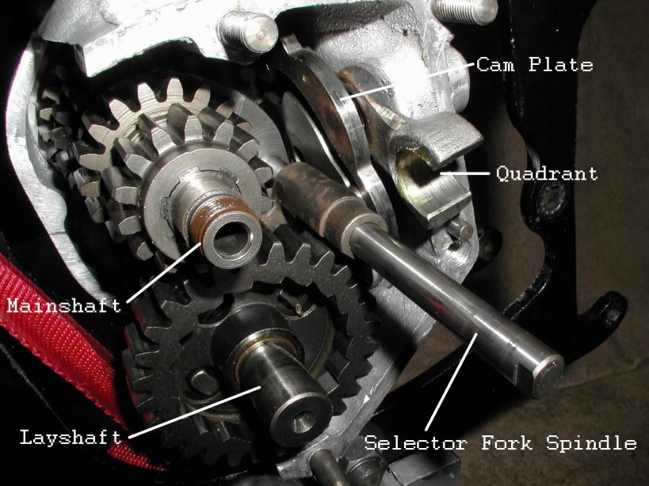

<

Dismantling and inspecting the Commando gearbox
by Fred Eaton
Summary:
This article in conjunction with your shop manual should help take you through dismantling your gearbox,
cleaning and inspecting your gears and moving parts, and preparing your cases for assembling.
We have a complete cut-away gearbox that we will use for this article. This box lets us see all the moving parts and will help
explain the procedures with better pictures.
All the fasteners in the gearbox are Whitworth threads and require Whitworth sockets and wrenches.
If you are not familiar with the Commando gearbox, see Commando Gearbox -- How does it work?
Holding the gearbox:
You can perform limited work on your gearbox in the frame, but any serious work like replacing the lay shaft bearing, which is
recommended for all pre-MK3 gearboxes, should be done on the bench. You must have your gearbox securely held in place in order
to remove a couple of the hard-to-remove nuts. You can hold it in a vise by clamping on one of the mounting flanges or use the rear engine
cradle as shown in the following pictures. If you are going to use the engine cradle and are doing a complete frame up restoration, dismantle
your gearbox, then you can get your engine mount powder coated or painted. Assembling the gearbox does not require the gearbox to be as securely
mounted as the dismantling requires and holding it in a vise should work. If you can rebuild your gearbox prior to having to paint or coat your
engine mount, that is the best of all worlds.

Gearbox mounted to the rear engine cradle and bolted securely in a vise.
Chain to secure the main shaft from moving.
You will also need to place a length of chain around the counter shaft sprocket and fix to the vise or bench.
This will keep the main shaft from rotating and allow you to remove the counter shaft nut and main shaft nut.
Strapping the gearbox for removing a stubborn main shaft nut.
Removing the clutch operating lever body lockring (04-0003) and the main shaft nut (04-0023) behind it may be the most stubborn things to remove in the gearbox.
Applying heat (I use a propane torch or a heat gun) normally works for both these stubborn fasteners, but if red Loctite has been used on the main shaft nut,
you will need heat and some real force. With the chain securing the main shaft from rotating, applying
real force on the main shaft nut will have a tendency to rotate the whole engine cradle out of the vise. To solve this problem, I use a
tie down strap to secure the engine cradle to the vise as in the above picture.
I always have a pan or two on the bench so as I remove something from the gearbox, I can place that part in the pan.
I have several pans that I use to clean parts and by placing the parts in a pan, I keep the bench clean and keep from loosing parts.
Procedure:
Remove the outer cover --
- Remove the kickstart arm and the five screws holding the outer cover to the inner case. You may need an impact screwdriver to remove
the five screws if this cover has not been removed in some time.
- You can remove the shift lever or leave it attached which may help in separating the cover from the case.
- Using a rubber mallet, tap on the sides of the cover, tapping the cover away from the case.
After several taps you should see a crack in the seam. When the crack is thick enough to get a narrow, thin putty knife blade in the crack,
you can move the putty knife blade around the cover separating the gasket from one side or the other. After you can get the blade completely
around the cover, except for the two locating dowels, the cover should come off easily.
Using a putty knife to split the cover from the case.
Removing the clutch operating lever body with a home built tool.

Removing the clutch operating lever body with the Old britts lockring socket.
There is not a factory tool available to remove the lockring, but we have developed a lockring socket (see below). You can make a removal tool by taking
a section of 1 1/2" pipe, obtained from any hardware store, and removing the sides to leave two tangs that fit into the lockring
notches. You can drill a hole in the end and insert a screwdriver for leverage, or you can weld a handle as I did in the following
pictures. Please do not use a screwdriver to pound against one of the notches on the lockring. If you must, use a round punch and you may
get the ring on without damaging it. The lockring is right hand thread.

Home made tool.
 Old Britts Lockring Socket.
Old Britts Lockring Socket.
Remove the main shaft nut --
This nut is right hand thread and usually requires heat and leverage to remove (see the last picture in the "Holding the gearbox" section).
Remove the kickstart spring --
- Using a screwdriver, move the spring hook part way from the inner case down the stud.
Hold the end of the hook with a pair of vise grip pliers and gently lift the hook from the stud and ease it counter
clockwise to the edge of the case.

- With a screwdriver pry the spring tang out of the hole in the kickstart shaft.
You can now slide the spring off the kickstart shaft.

Remove the inner case --
- Remove the seven nuts from the studs in the gearbox shell -- five nuts inside the inner cover and two outside the cover.
- Using a rubber mallet, tap on the sides of the case, tapping the case away from the shell.
After several taps you should see a crack in the seam. When the crack is thick enough to get a narrow, thin putty knife blade in the crack,
you can move the putty knife blade around the case separating the gasket from one side or the other. After you can get the blade completely
around the case, except for the two locating dowels. When removing the case, press in on the kickstart shaft, so it stays on the layshaft.
Remove gears and shafts --
- Remove the kickstart shaft.
- Unscrew the selector fork spindle.
- Remove 1st gear main and 1st gear lay.
- Remove 2nd gear main.
- Remove 2nd gear lay and its selector fork.
- Remove 3rd gear main and its selector fork.
- Lightly pull on the lay shaft. One of three things will happen: 1) the shaft and bearing will come out of the shell. This is not good,
because it means the bearing has probably been spinning in its bore. 2) the shaft and inner race come out of the shell. This is fine, because
it means that the bearing is a roller bearings. 3) the shaft will not come out. This is also fine, because it means the bearing is firmly
seated in the shell.
- If the lay shaft did not come out, apply heat to the back of the shell behind the lay shaft bearing and pull the lay shaft out after
enough heat has been applied.
- Remove the clutch locating circlip on the main shaft just outboard from the countershaft sprocket. I find it very difficult to remove
this circlip using circlip expanders. I end up using a pair of needle nose pliers and a screwdriver to pry this circlip off, destroying the
circlip most of the time, but it is a good idea to replace this circlip anyway.
- Remove the countershaft sprocket lock screw.
- Remove the countershaft sprocket lock washer.
- Remove the countershaft sprocket nut. This is a left hand nut.
- Remove the countershaft sprocket.
- Remove the main shaft.
- Gently tap on the end of the sleeve gear with a rubber mallet, and the sleeve gear should come out of its bearing. If not, apply some heat
and remove the sleeve gear.
- If the sleeve gear bearing came out with the sleeve gear without applying heat, this is not good, because it it means the bearing has
probably been spinning in its bore.

Remove the cam plate and related parts --
- Remove the domed nut holding in the detent plunger and spring.
- Remove the two bolts holding in the cam plate and the quadrant.
- Remove the cam plate and quadrant.
Remove gearbox bearings --
If you were unlucky enough to have one or both bearings loose in the gearbox shell, how to fix loose bearings will be addressed
in the article, Assembling the Commando gearbox.
- Remove the mainshaft bearing spacer.
- Pry out the mainshaft oil seal.
- Heat up the gearbox shell with a torch or in the oven at 300 to 350 Degrees Fahrenheit.
- Gently tap the shell upside down on a piece of wood and the bearings should fall out.
- If you have a stubborn mainshaft bearing, you can press it out from the back side with a socket that just fits into the hole.
- If you have a stubborn layshaft bearing, you will have to use a bearing slide hammer, pictured below.
- The main shaft bearing in the inner case can be removed by heating the case and pressing the bearing out with a socket or drift.
Bearing slide hammer.
Thoroughly clean all parts --
- I have a parts cleaning tank that I soak and clean everything prior to inspection.
You can use contact cleaner to clean all your parts if you do not have access to a parts cleaner.
- Make sure that you remove all the gasket material and old sealer from the sealing edges of the gearbox shell, inner case and outer cover.
This must be done in order to get proper sealing when you assemble the gearbox.
- After cleaning the gearbox shell and the inner case, I normally bead blast these cases using glass beads.
I then thoroughly clean the cases again making sure all the beads are removed. I then will paint the outside of the shell and
inner case.
- I normally have the outer cover professionally polished or if not in bad shape, polish it myself.
Inspecting the gears --
- Inspect the gears for wear on the teeth. This usually shows up on the drive side of the smaller gear of a gear set.
The above picture shows what wear looks like and I would replace all three gears. I replace gears in sets (i.e.,
if the 1st gear main is worn, I would replace both 1st gear main and lay.) Gears wear together and it is not recommended to mate
a used gear with a new gear for they may have a tendency to wear faster. After saying this, I have seen lots of owners replace only
one gear and have not heard of any disasters, especially if the bike is a weekend putt and not a daily rider.
- If the wear is only on a couple of the teeth and only on part of the tooth and not as deep as the left gear in the above picture, you could
probably get away with reusing that gear.
- Check the inside of the 1st gear lay and make sure the notches that the kickstart pawl fits into are not rounded and will hold the pawl
when kicking.
- Check that all the dogs on the gears are not broken or extremely worn.
Inspecting the kickstart shaft --
- If the kickstart pawl is worn, as in the above picture, I would replace it.
- The splines that the kickstart arm fits around are worn in this picture, so I would replace the kickstart shaft.
General inspection --
- I normally replace all the bearings to be on the safe side, but if you are going to reuse any bearing, make sure there is no roughness
when you spin the bearing after you have thoroughly cleaned the bearing.
- Check the bushing inside the gears for wear marks and that they do not rock excessively on its shaft.
- Inspect both shafts for wear on the splines and excessive run-out. Also check the threads on the mainshaft to make sure they are not damaged.
I check run-out on a lathe with a dial indicator.
- Inspect the gearbox shell, inner case and outer cover for cracks or damage.
- Generally inspect everything else to see if there is excessive wear, chipping, or damage.
Return to Old Britts home page
Return to Technical Articles
Return to Build Your Own Commando
This page was written and designed by F. H. Eaton
& Associates if you have any questions or comments please
contact us at info@fheaton.com